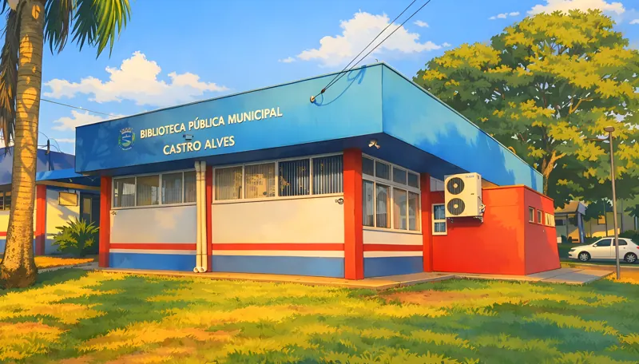

Conhecer o espaço →LEITURA · CONHECIMENTO · DESCOBERTAS
Biblioteca Pública Municipal Castro Alves
Um espaço para descobrir histórias, ampliar conhecimentos e explorar o acervo pelo catálogo online.
ENDEREÇO
Rua Ipiranga, 720 — Centro
Palotina — PR
ATENDIMENTO
Segunda a sexta-feira · 8h às 11h30 e 13h30 às 17h30